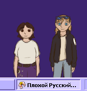

A sort-of simple ghost template with a built-in "horror" mode, that makes use of rewriting yaya.txt and reloading the SHIORI. (It's ok if that sounds complicated, it's built into the ghost so you shouldn't have to worry too much.)
Comes in english & russian flavors - technically a successor to the "bad russian template" but hopefully built better.
Template built with the help of/referenced Minimum YAYA template and Simplicity template:
https://ukagaka.zichqec.com/template/minimum_yaya_template
https://ukagaka.zichqec.com/template/simplicity_template
Thank you Zichqec! ( https://ukagaka.zichqec.com/ )